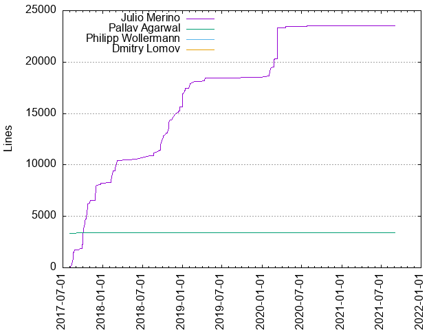
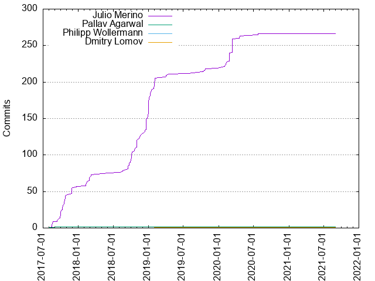

Authors
| Author | Commits (%) | + lines | - lines | First commit | Last commit | Age | Active days | # by commits |
|---|
| Julio Merino | 266 (98.52%) | 23497 | 13456 | 2017-08-09 | 2020-07-26 | 1081 days, 14:11:57 | 138 | 1 |
| Pallav Agarwal | 2 (0.74%) | 3409 | 0 | 2017-08-01 | 2017-09-13 | 42 days, 20:14:28 | 2 | 2 |
| Philipp Wollermann | 1 (0.37%) | 0 | 89 | 2021-09-01 | 2021-09-01 | 0:00:00 | 1 | 3 |
| Dmitry Lomov | 1 (0.37%) | 2 | 0 | 2019-01-30 | 2019-01-30 | 0:00:00 | 1 | 4 |


| Month | Author | Commits (%) | Next top 5 | Number of authors |
|---|
| 2021-09 | Philipp Wollermann | 1 (100.00% of 1) | | 1 |
| 2020-07 | Julio Merino | 2 (100.00% of 2) | | 1 |
| 2020-05 | Julio Merino | 1 (100.00% of 1) | | 1 |
| 2020-04 | Julio Merino | 4 (100.00% of 4) | | 1 |
| 2020-03 | Julio Merino | 8 (100.00% of 8) | | 1 |
| 2020-02 | Julio Merino | 23 (100.00% of 23) | | 1 |
| 2019-12 | Julio Merino | 1 (100.00% of 1) | | 1 |
| 2019-10 | Julio Merino | 14 (100.00% of 14) | | 1 |
| 2019-09 | Julio Merino | 1 (100.00% of 1) | | 1 |
| 2019-07 | Julio Merino | 1 (100.00% of 1) | | 1 |
| 2019-04 | Julio Merino | 4 (100.00% of 4) | | 1 |
| 2019-03 | Julio Merino | 1 (100.00% of 1) | | 1 |
| 2019-02 | Julio Merino | 7 (100.00% of 7) | | 1 |
| 2019-01 | Julio Merino | 45 (97.83% of 46) | Dmitry Lomov | 2 |
| 2018-12 | Julio Merino | 25 (100.00% of 25) | | 1 |
| 2018-11 | Julio Merino | 10 (100.00% of 10) | | 1 |
| 2018-10 | Julio Merino | 28 (100.00% of 28) | | 1 |
| 2018-09 | Julio Merino | 12 (100.00% of 12) | | 1 |
| 2018-08 | Julio Merino | 4 (100.00% of 4) | | 1 |
| 2018-06 | Julio Merino | 1 (100.00% of 1) | | 1 |
| 2018-05 | Julio Merino | 1 (100.00% of 1) | | 1 |
| 2018-03 | Julio Merino | 4 (100.00% of 4) | | 1 |
| 2018-02 | Julio Merino | 9 (100.00% of 9) | | 1 |
| 2018-01 | Julio Merino | 3 (100.00% of 3) | | 1 |
| 2017-12 | Julio Merino | 3 (100.00% of 3) | | 1 |
| 2017-11 | Julio Merino | 10 (100.00% of 10) | | 1 |
| 2017-10 | Julio Merino | 22 (100.00% of 22) | | 1 |
| 2017-09 | Julio Merino | 13 (92.86% of 14) | Pallav Agarwal | 2 |
| 2017-08 | Julio Merino | 9 (90.00% of 10) | Pallav Agarwal | 2 |
| Year | Author | Commits (%) | Next top 5 | Number of authors |
|---|
| 2021 | Philipp Wollermann | 1 (100.00% of 1) | | 1 |
| 2020 | Julio Merino | 38 (100.00% of 38) | | 1 |
| 2019 | Julio Merino | 74 (98.67% of 75) | Dmitry Lomov | 2 |
| 2018 | Julio Merino | 97 (100.00% of 97) | | 1 |
| 2017 | Julio Merino | 57 (96.61% of 59) | Pallav Agarwal | 2 |
| Domains | Total (%) |
|---|
| google.com | 151 (55.93%) |
|---|
| meroh.net | 118 (43.70%) |
|---|
| gmail.com | 1 (0.37%) |
|---|